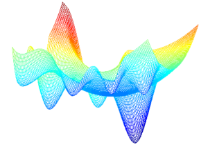

← Back to Main Page


Projects
Multi-Source Uncertainty Aware Fusion for Soil Moisture Estimation
IGARSS 2026 accepted paper on uncertainty-aware fusion of SMAP and CYGNSS data for soil moisture estimation.
Read more →
An Application for Photovoltaic Power Production Prediction
Built an app for predicting PV production and revenue from rooftop solar panel data.
Read more →
Optimizing the Trajectory of a Robotic Arm
Used simulation and control theory to optimize robotic motion.
Read more →
Augmented Reality Sudoku Solver
Built a mobile app that solves Sudoku puzzles using live camera feed.
Read more →
A Comparative Study on First Order Optimization Algorithms
Compared various First Order Optimization Algorithm on Benchmark Functions and Signal Denoising
Read more →